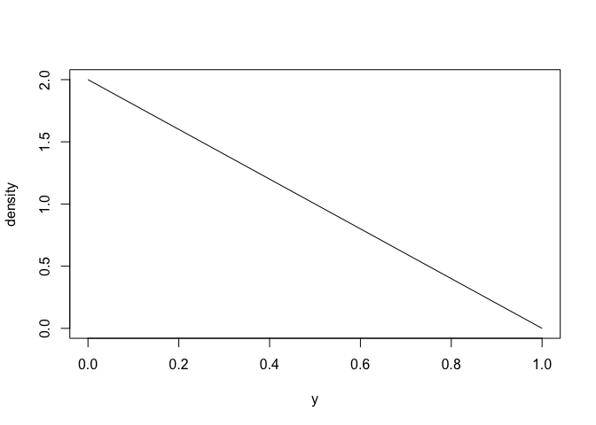

With distionary, you can:
The main purpose of distionary is to implement a distribution object, and to make distribution calculations available even if they are not specified in the distribution. distionary powers the wider probaverse ecosystem for making probability distributions that are representative of your data, not just out-of-the-bag distributions like the Normal, Poisson, etc.
distionary makes reference to common terms regarding probability distributions. If you’re uneasy with these terms and concepts, most intro books in probability will be a good resource to learn from. As distionary develops, more documentation will be made available so that it’s more self-contained.
The name “distionary” is a portmanteau of “distribution” and “dictionary”. While a dictionary lists and defines words, distionary defines distributions and makes a list of common distribution families available. These distributions act as building blocks for the wider probaverse.
Installation
distionary is not on CRAN yet. You can download the development version from GitHub with:
# install.packages("devtools")
devtools::install_github("probaverse/distionary")Example
Specify a distribution like a Poisson distribution and a Generalised Extreme Value (GEV) distribution using the dst_*() family of functions.
# Create a Poisson distribution
poisson <- dst_pois(1.5)
# Inspect
poisson
#> Poisson distribution (discrete)
#> --Parameters--
#> lambda
#> 1.5
# Create a GEV distribution
gev <- dst_gev(-1, 1, 0.2)
# Inspect
gev
#> Generalised Extreme Value distribution (continuous)
#> --Parameters--
#> location scale shape
#> -1.0 1.0 0.2Here is what the distributions look like, via their probability mass (PMF) and density functions.
plot(poisson)
plot(gev)
Evaluate various distributional representations (functions that fully describe the distribution), such as the PMF or quantiles. The eval_*() functions simply evaluate the representation, whereas the enframe_*() functions place the output alongside the input in a data frame or tibble.
eval_pmf(poisson, at = 0:4)
#> [1] 0.22313016 0.33469524 0.25102143 0.12551072 0.04706652
enframe_quantile(gev, at = c(0.2, 0.5, 0.9))
#> # A tibble: 3 × 2
#> .arg quantile
#> <dbl> <dbl>
#> 1 0.2 -1.45
#> 2 0.5 -0.620
#> 3 0.9 1.84Evaluate properties such as mean, skewness, and range of valid values.
You can make your own distribution, too.
# Make a distribution.
linear <- distribution(
density = function(x) {
d <- 2 * (1 - x)
d[x < 0 | x > 1] <- 0
d
},
cdf = function(x) {
p <- 2 * x * (1 - x / 2)
p[x < 0] <- 0
p[x > 1] <- 1
p
},
.vtype = "continuous",
.name = "My Linear"
)
# Inspect
linear
#> My Linear distribution (continuous)
#> --Parameters--
#> NULLHere is what it looks like (density function).
plot(linear)
Even though only the density and CDF are defining the distribution, other properties can be evaluated, like its mean and quantiles
mean(linear)
#> [1] 0.3333333
enframe_quantile(linear, at = c(0.2, 0.5, 0.9))
#> # A tibble: 3 × 2
#> .arg quantile
#> <dbl> <dbl>
#> 1 0.2 0.106
#> 2 0.5 0.293
#> 3 0.9 0.684
distionary in the context of other packages
Other R packages exist that turn probability distributions into objects and allow their evaluation. distionary is unique in that provides the distribution framework needed to power the wider probaverse ecosystem, which provides a natural API for making probability distributions that are representative of the system being modelled.
Acknowledgements
The creation of distionary would not have been possible without the support of the R Consortium, The Natural Science and Engineering Research Council of Canada (NSERC), The University of British Columbia, and BGC Engineering Inc.
Citation
To cite package distionary in publications use:
Coia V (2025). distionary: Create and Evaluate Probability Distributions. R package version 0.1.0, https://github.com/probaverse/distionary, https://distionary.probaverse.com/.
Code of Conduct
Please note that the distionary project is released with a Contributor Code of Conduct. By contributing to this project, you agree to abide by its terms.